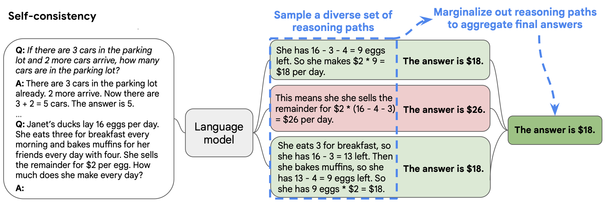
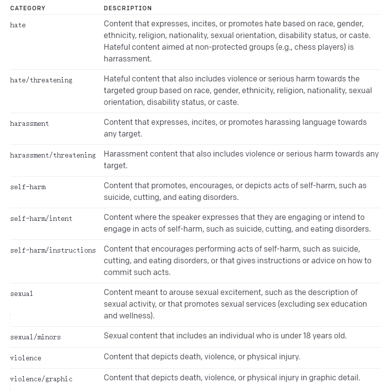

prompt

文章目录
GPT编程和应用
一些好用的 Prompt 查询网站
2.3.2、实现上下文DST
在Prompt中加入上下文
|
|
实现NLG对话策略
我们先把刚才的能力串起来，构建一个简单的客服机器人
|
|
进阶技巧
3.1、思维链（Chain of Thoughts, CoT）
思维链，是大模型涌现出来的一种独特能力。
它是偶然被「发现」（对 OpenAI 的人在训练时没想过会这样）的。有人在提问时以「Let’s think step by step」开头，结果发现 AI 会自动把问题分解成多个步骤，然后逐步解决，使得输出的结果更加准确。
- 思维链的原理，让AI生成更多相关的内容，构成更丰富的「上文」，从而提高「下文」生成更正确结果的概率
- 对涉及计算和逻辑推理的问题，尤为有效
- 用好思维链，复杂问题的结果更准确
换一个业务场景：客服质检
任务本质是检查客服与用户的对话是否有不合规的地方
- 质检是电信运营商和金融券商大规模使用的一项技术
- 每个涉及到服务合规的检查点称为一个质检项
我们选一个质检项来演示思维链的作用：
产品信息准确性：
当向用户介绍流量套餐产品时，客服人员必须准确提及产品名称、月费价格、月流量总量、适用条件（如有）
上述信息缺失一项或多项，或信息与实时不符，都算信息不准确
|
|
根据对话记录，客服介绍产品信息的准确性可以分析如下：
-
客服介绍了畅游套餐，包括月费180元和月流量100G，这与实际产品信息相符，属于准确信息。
-
客服介绍了校园套餐，包括月费150元和月流量200G，并且提到了该套餐只限在校学生办理，这与实际产品信息相符，属于准确信息。
综上所述，客服介绍的产品信息是准确的。
因此，输出结果为：{“accurate”:true} 用户：流量大的套餐有什么 客服：我们推荐畅游套餐，180元每月，100G流量，大多数人都够用的 用户：学生有什么优惠吗 客服：如果是在校生的话，可以办校园套餐，150元每月，含200G流量
根据对话内容，客服介绍了两种套餐产品：畅游套餐和校园套餐。经济套餐和无限套餐没有被提及。
对于畅游套餐，客服提到了产品名称、月费价格和月流量总量，信息准确。
对于校园套餐，客服也提到了产品名称、月费价格和月流量总量，信息准确。
因此，客服介绍产品信息的准确性是正确的。
输出：{“accurate”:true} { “accurate”: false } {“accurate”:false} 根据对话内容，客服介绍的产品信息如下： …
因此，客服介绍产品信息是准确的。
输出结果为：{“accurate”:true} Output is truncated. View as a scrollable element or open in a text editor. Adjust cell output settings…
3.2、自洽性（Self-Consistency）
- 采样多个具有多样性的结果
- 通过投票选出最终结果

3.3、思维树（Tree-of-thought, ToT）
- 在思维链的每一步，采样多个分支
- 拓扑展开成一棵思维树
- 判断每个分支的任务完成度，以便进行启发式搜索
- 设计搜索算法
- 判断叶子节点的任务完成的正确性
业务场景举例：指标解读，项目推荐并说明依据
小明100米跑成绩：10.5秒，1500米跑成绩：3分20秒，铅球成绩：12米。他适合参加哪些搏击运动训练。
|
|
|
|
Prompt攻击
四、防止Prompt攻击
4.1、攻击方式1：著名的「奶奶漏洞」
4.2、攻击方式2：Prompt注入
|
|
4.3、防范措施1：Prompt注入分类器
|
|
4.4、防范措施2：直接在输入中防御
|
|
五、内容审核：Moderation API
可以通过调用OpenAI的Moderation API来识别用户发送的消息是否违法相关的法律法规，如果出现违规的内容，从而对它进行过滤。

|
|
|
|
OpenAI API 的几个重要参数
|
|
- Temperature 参数很关键
- 执行任务用 0，文本生成用 0.7-0.9
- 无特殊需要，不建议超过1
如果你在网页端调试 prompt
- 把 System Prompt 和 User Prompt 组合，写到界面的 Prompt 里
- 最近几轮对话内容会被自动引用，不需要重复粘贴到新 Prompt 里
- 如果找到了好的 Prompt，开个新 Chat 再测测，避免历史对话的干扰
- 用 ChatALL 可以同时看到不同大模型对同一个 Prompt 的回复，方便对比
ChatGpt 帮你写 Prompt
|
|
function calling
在LLM中调用函数
函数调用是指可靠地连接LLM与外部工具的能力。让用户能够使用高效的外部工具、与外部API进行交互。
GPT-4和GPT-3.5是经过微调的LLM，能够检测函数是否被调用，随后输出包含调用函数参数的JSON。通过这一过程被调用的函数能够作为工具添加到您的AI应用中，并且您可以在单个请求中定义多个函数。
函数调用是一项重要能力。它对于构建LLM驱动的聊天机器人或代理至关重要。这些聊天机器人或代理需要为LLM检索上下文。它们还与外部工具交互。这种交互是通过将自然语言转换为API调用来完成的。
函数调用使开发者能够创建：
能够高效使用外部工具回答问题的对话代理。例如，查询“伯利兹的天气如何？”将被转换为类似get_current_weather(location: string, unit: ‘celsius’ | ‘fahrenheit’)的函数调用 用于提取和标记数据的LLM驱动解决方案（例如，从维基百科文章中提取人名） 可以帮助将自然语言转换为API调用或有效数据库查询的应用程序 能够与知识库交互的对话式知识检索引擎 在这份指南中，我们展示了如何针对GPT-4和其他开源模型给出提示，以执行不同的函数调用。
GPT4 进行函数调用
作为一个基本示例，假设我们要求模型检查特定地点的天气。
LLM本身无法响应此请求。因为它所使用的训练数据集截止至之前的某个日期。解决这个问题的方法是将LLM与外部工具结合起来。您可以利用模型的函数调用能力来确定要调用的外部函数及其参数，然后让它返回最终回复结果。以下是一个简单的示例，展示了如何使用OpenAI API实现这一点。
假设一个用户向模型提出以下问题：
|
|
要使用函数调用处理此请求，第一步是定义一个或一组天气函数。您将作为OpenAI API请求的一部分传递这些函数：
|
|
get_current_weather函数能够返回指定位置的天气情况。当您将这个函数定义作为请求的一部分传递时，它实际上并不执行函数，只是返回一个包含调用函数所需参数的JSON对象。以下是一些如何实现这一点的代码片段。
|
|
您可以像这样构造用户提问：
|
|
文章作者 lyr
上次更新 2024-04-16